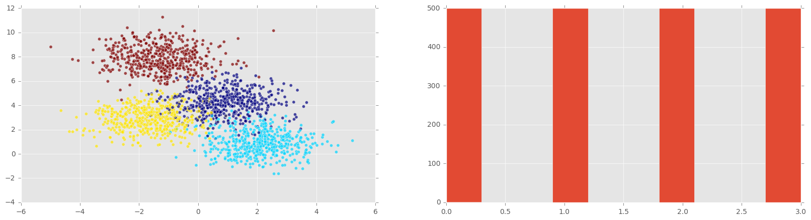

Scaling, Centering, Noise with kNN, Linear Regression, Logit
Foreword
Code snippets and excerpts from the tutorial. Python 3. From DataCamp.
Load and explore the Wine dataset¶
We use the wine quality dataset related to red and white vinho verde wine samples, from the north of Portugal.
# import the modules
%pylab inline
import pandas as pd
import matplotlib.pyplot as plt
# set the style
plt.style.use('ggplot')
1 | |
# import the data
df = pd.read_csv('http://archive.ics.uci.edu/ml/machine-learning-databases/wine-quality/winequality-red.csv ' , sep = ';')
df.head(3)
| fixed acidity | volatile acidity | citric acid | residual sugar | chlorides | free sulfur dioxide | total sulfur dioxide | density | pH | sulphates | alcohol | quality | |
|---|---|---|---|---|---|---|---|---|---|---|---|---|
| 0 | 7.4 | 0.70 | 0.00 | 1.9 | 0.076 | 11.0 | 34.0 | 0.9978 | 3.51 | 0.56 | 9.4 | 5 |
| 1 | 7.8 | 0.88 | 0.00 | 2.6 | 0.098 | 25.0 | 67.0 | 0.9968 | 3.20 | 0.68 | 9.8 | 5 |
| 2 | 7.8 | 0.76 | 0.04 | 2.3 | 0.092 | 15.0 | 54.0 | 0.9970 | 3.26 | 0.65 | 9.8 | 5 |
# drop target variable
# only keep the values; the DataFrame becomes a simple array (matrix)
# index (axis=0 / ‘index’) or columns (axis=1 / ‘columns’).
X = df.drop('quality' , axis=1).values
# print the array
print(X)
1 2 3 4 5 6 7 | |
The last column is gone from the array. Make it a list instead (or a single-row array).
y1 = df['quality'].values
# print the single-row array
print(y1)
1 | |
# row, col of the DataFrame
df.shape
1 | |
# plot all the columns or variables
pd.DataFrame.hist(df, figsize = [15,15]);
plt.show()

Notice the range of each variable; some are wider.
Any algorithm, such as k-NN, which cares about the distance between data points. This motivates scaling our data.
Let us turn it into a two-category variable consisting of ‘good’ (rating > 5) & ‘bad’ (rating <= 5) qualities.
print(y1)
1 | |
# is the rating <= 5 ?
y = y1 <= 5
print(y)
1 | |
True is worth 1 and False is worth 0.
# plot two histograms
# the original target variable
# and the aggregated target variable
plt.figure(figsize=(20,5));
# left plot
plt.subplot(1, 2, 1 );
plt.hist(y1);
plt.xlabel('original target value')
plt.ylabel('count')
# right plot
plt.subplot(1, 2, 2);
plt.hist(y)
plt.xlabel('aggregated target value')
plt.show()

Again, on the right histogram, True = 1 and False = 0.
k-Nearest Neighbours¶
Measure performance¶
Accuracy is the default scoring method for both
- k-Nearest Neighbours and
- logistic regression.
Accuracy is commonly defined for binary classification problems in terms of true positives & false negatives. It can also be defined in terms of a confusion matrix.
Other measures of model performance are derived from the confusion matrix: precision (true positives divided by the number of true & false positives) and recall (number of true positives divided by the number of true positives plus the number of false negatives).
The F1-score is the harmonic mean of the precision and the recall.
Train-test split and performance in practice¶
The rule of thumb is to use approximately
- 80% of the data for training (train set) and
- 20% for testing (test set).
from sklearn.cross_validation import train_test_split
X_train, X_test, y_train, y_test = train_test_split(X,
y,
test_size=0.2,
random_state=42)
# the k-NN model
from sklearn import neighbors, linear_model
knn = neighbors.KNeighborsClassifier(n_neighbors = 5)
knn_model_1 = knn.fit(X_train, y_train)
print('k-NN score for test set: %f' % knn_model_1.score(X_test, y_test))
print('k-NN score for training set: %f' % knn_model_1.score(X_train, y_train))
1 2 | |
The accuracy, more specifically the test accuracy, is not great.
Let us print out all the other performance measures for the test set.
from sklearn.metrics import classification_report
y_true, y_pred = y_test, knn_model_1.predict(X_test)
print(classification_report(y_true, y_pred))
1 2 3 4 5 6 | |
Other performance measures for the train set.
y_true, y_pred = y_train, knn_model_1.predict(X_train)
print(classification_report(y_true, y_pred))
1 2 3 4 5 6 | |
These underperformances might come from the spread in the variables. The range of each variable is different; some are wider.
Preprocessing: scaling and centering the data¶
Preprocessing happens before running any model, such as a regression (predicting a continuous variable) or a classification (predicting a discrete variable) using one or another model (k-NN, logistic, decision tree, random forests etc.).
For numerical variables, it is common to either normalize or standardize the data.
Normalization: scaling a dataset so that its minimum is 0 and its maximum 1.
Stardardization: centering the data around 0 and to scale with respect to the standard deviation.
where \mu and \sigma are the mean and standard deviation of the dataset.
There are other transformatoions, such as the log transformation or the Box-Cox transformation, to make the data look more Gaussian or a normally distributed.
k-NN: scaling in practice¶
Scale the data¶
print(X)
1 2 3 4 5 6 7 | |
from sklearn.preprocessing import scale
# minimum is 0 and its maximum 1
Xs = scale(X)
print(Xs)
1 2 3 4 5 6 7 8 9 10 11 12 13 | |
Run the k-NN¶
from sklearn.cross_validation import train_test_split
# split
# 80% of the data for training (train set)
# 20% for testing (test set)
Xs_train, Xs_test, y_train, y_test = train_test_split(Xs,
y,
test_size=0.2,
random_state=42)
# Run
knn_model_2 = knn.fit(Xs_train, y_train)
Measure the performance¶
print('k-NN score for test set: %f' % knn_model_2.score(Xs_test, y_test))
print('k-NN score for training set: %f' % knn_model_2.score(Xs_train, y_train))
1 2 | |
y_true, y_pred = y_test, knn_model_2.predict(Xs_test)
# Test set
print(classification_report(y_true, y_pred))
1 2 3 4 5 6 | |
y_true, y_pred = y_train, knn_model_2.predict(Xs_train)
# Train set
print(classification_report(y_true, y_pred))
1 2 3 4 5 6 | |
Normalization-scaling improves the performance compare to the previous classification_report.
k-NN Recap¶
Without scaling¶
# Set sc = False
# Do not scale the features
sc = False
# Set the number of k in k-NN
nk = 5
# Load data
df = pd.read_csv('http://archive.ics.uci.edu/ml/machine-learning-databases/wine-quality/winequality-red.csv ' , sep = ';')
# Drop target variable
X = df.drop('quality' , 1).values
# Scale, if desired
if sc == True:
X = scale(X)
# Target value
y1 = df['quality'].values # original target variable
# New target variable: is the rating <= 5?
y = y1 <= 5
# Split (80/20) the data into a test set and a train set
# X_train, X_test, y_train, y_test
X_train, X_test, y_train, y_test = train_test_split(X,
y,
test_size=0.2,
random_state=42)
# Train the k-NN model
knn = neighbors.KNeighborsClassifier(n_neighbors = nk)
knn_model = knn.fit(X_train, y_train)
# Print performance on the test set
print('k-NN accuracy for test set: %f' % knn_model.score(X_test, y_test))
y_true, y_pred = y_test, knn_model.predict(X_test)
print(classification_report(y_true, y_pred))
1 2 3 4 5 6 7 | |
With scaling¶
# Set sc = True
# to scale the features
sc = True
# Set the number of k in k-NN
nk = 5
# Load data
df = pd.read_csv('http://archive.ics.uci.edu/ml/machine-learning-databases/wine-quality/winequality-red.csv ' , sep = ';')
# Drop target variable
X = df.drop('quality' , 1).values
# Scale, if desired
if sc == True:
X = scale(X)
# Target value
y1 = df['quality'].values # original target variable
# New target variable: is the rating <= 5?
y = y1 <= 5
# Split (80/20) the data into a test set and a train set
# X_train, X_test, y_train, y_test
X_train, X_test, y_train, y_test = train_test_split(X,
y,
test_size=0.2,
random_state=42)
# Train the k-NN model
knn = neighbors.KNeighborsClassifier(n_neighbors = nk)
knn_model = knn.fit(X_train, y_train)
# Print performance on the test set
print('k-NN accuracy for test set: %f' % knn_model.score(X_test, y_test))
y_true, y_pred = y_test, knn_model.predict(X_test)
print(classification_report(y_true, y_pred))
1 2 3 4 5 6 7 | |
Linear regression¶
Before addressing an alternative to k-NN, the logistic regression or Logit, let us briefly review the linear regresion with a different dataset.
# Import necessary packages
%pylab inline
import pandas as pd
import matplotlib.pyplot as plt
# set the style
plt.style.use('ggplot')
# Import nmore packages
from sklearn import datasets
from sklearn import linear_model
import numpy as np
1 | |
# Load the data
# The data is part of the scikit-learn module
boston = datasets.load_boston()
yb = boston.target.reshape(-1, 1)
Xb = boston['data'][:,5].reshape(-1, 1)
print(yb[:10])
1 2 3 4 5 6 7 8 9 10 | |
print(Xb[:10])
1 2 3 4 5 6 7 8 9 10 | |
# Plot data
plt.scatter(Xb,yb)
plt.ylabel('value of house /1000 ($)')
plt.xlabel('number of rooms')
1 | |

# Create linear regression object
regr = linear_model.LinearRegression()
# Train the model using the training sets
regr.fit( Xb, yb)
1 | |
# Plot outputs
plt.scatter(Xb, yb, color='black')
plt.plot(Xb, regr.predict(Xb), color='blue',
linewidth=3)
plt.show()

Logistic regression (Logit)¶
With random numbers¶
# Synthesize data
X1 = np.random.normal(size=150)
y1 = (X1 > 0).astype(np.float)
X1[X1 > 0] *= 4
X1 += .3 * np.random.normal(size=150)
X1 = X1.reshape(-1, 1)
# Run the classifier
clf = linear_model.LogisticRegression()
clf.fit(X1, y1)
1 2 3 4 | |
X1[:10]
1 2 3 4 5 6 7 8 9 10 | |
# Order X1
X1_ordered = sorted(X1, reverse=False)
X1_ordered[:10]
1 2 3 4 5 6 7 8 9 10 | |
# Plot the result
plt.scatter(X1.ravel(), y1, color='black', zorder=20 , alpha = 0.5)
plt.plot(X1_ordered, clf.predict_proba(X1_ordered)[:,1], color='blue' , linewidth = 3)
plt.ylabel('target variable')
plt.xlabel('predictor variable')
plt.show()

With the Wine dataset¶
# Load data
df = pd.read_csv('http://archive.ics.uci.edu/ml/machine-learning-databases/wine-quality/winequality-red.csv ' , sep = ';')
df.head(3)
| fixed acidity | volatile acidity | citric acid | residual sugar | chlorides | free sulfur dioxide | total sulfur dioxide | density | pH | sulphates | alcohol | quality | |
|---|---|---|---|---|---|---|---|---|---|---|---|---|
| 0 | 7.4 | 0.70 | 0.00 | 1.9 | 0.076 | 11.0 | 34.0 | 0.9978 | 3.51 | 0.56 | 9.4 | 5 |
| 1 | 7.8 | 0.88 | 0.00 | 2.6 | 0.098 | 25.0 | 67.0 | 0.9968 | 3.20 | 0.68 | 9.8 | 5 |
| 2 | 7.8 | 0.76 | 0.04 | 2.3 | 0.092 | 15.0 | 54.0 | 0.9970 | 3.26 | 0.65 | 9.8 | 5 |
# Drop target variable
X = df.drop('quality' , 1).values
# Print the array
print(X)
1 2 3 4 5 6 7 | |
The last column is gone.
y1 = df['quality'].values
# Print the single-row array
print(y1)
1 | |
df.shape
1 | |
# plot the other columns or variables
pd.DataFrame.hist(df, figsize = [15,15]);
plt.show() # facultative in Jypyter

Let us turn it into a two-category variable consisting of ‘good’ (rating > 5) & ‘bad’ (rating <= 5) qualities.
# is the rating <= 5 ?
y = y1 <= 5
print(y)
1 | |
from sklearn.cross_validation import train_test_split
# split
# 80% of the data for training (train set)
# 20% for testing (test set)
X_train, X_test, y_train, y_test = train_test_split(X,
y,
test_size=0.2,
random_state=42)
from sklearn import linear_model
# Initial logistic regression model
lr = linear_model.LogisticRegression()
# Fit the model
lr = lr.fit(X_train, y_train)
y_true, y_pred = y_train, lr.predict(X_train)
# Evaluate the train set
print('Logistic Regression score for train set: %f' % lr.score(X_train, y_train))
1 | |
print(classification_report(y_true, y_pred))
1 2 3 4 5 6 | |
from sklearn.metrics import classification_report
# Use the test set
y_true, y_pred = y_test, lr.predict(X_test)
# Evaluate the test set
print('Logistic Regression score for test set: %f' % lr.score(X_test, y_test))
1 | |
print(classification_report(y_true, y_pred))
1 2 3 4 5 6 | |
Note: the logistic regression performs better than k-NN without scaling.
Scale the data¶
print(X)
1 2 3 4 5 6 7 | |
from sklearn.preprocessing import scale
Xs = scale(X)
print(Xs)
1 2 3 4 5 6 7 8 9 10 11 12 13 | |
Run the Logit and measure the performance¶
from sklearn.cross_validation import train_test_split
# Split 80/20
Xs_train, Xs_test, y_train, y_test = train_test_split(Xs,
y,
test_size=0.2,
random_state=42)
# Run the logistic regression model
lr_2 = lr.fit(Xs_train, y_train)
# Fit the model
y_true, y_pred = y_train, lr_2.predict(Xs_train)
# Evaluate the train set
print('Logistic Regression score for train set: %f' % lr_2.score(Xs_train, y_train))
1 | |
print(classification_report(y_true, y_pred))
1 2 3 4 5 6 | |
# Use the test set
y_true, y_pred = y_test, lr_2.predict(Xs_test)
# Evaluate the test set
print('Logistic Regression score for test set: %f' % lr_2.score(Xs_test, y_test))
1 | |
print(classification_report(y_true, y_pred))
1 2 3 4 5 6 | |
This is very interesting! The performance of logistic regression did not improve with data scaling.
Predictor variables with large ranges that do not effect the target variable, a regression algorithm will make the corresponding coefficients small so that they do not effect predictions so much.
Logit Recap¶
Without scaling¶
# Set sc = False
# do not scale the features
sc = False
# Load the data
df = pd.read_csv('http://archive.ics.uci.edu/ml/machine-learning-databases/wine-quality/winequality-red.csv ' , sep = ';')
X = df.drop('quality' , 1).values # drop target variable
# Scale, if desired
if sc == True:
X = scale(X)
# Target value
y1 = df['quality'].values # original target variable
y = y1 <= 5 # new target variable: is the rating <= 5?
# Split (80/20) the data into a test set and a train
# X_train, X_test, y_train, y_test
train_test_split(X, y, test_size=0.2, random_state=42)
# Train logistic regression model
lr = linear_model.LogisticRegression()
lr = lr.fit(X_train, y_train)
# Print performance on the test set
print('Logistic Regression score for training set: %f' % lr.score(X_train, y_train))
y_true, y_pred = y_test, lr.predict(X_test)
print(classification_report(y_true, y_pred))
1 2 3 4 5 6 7 | |
Noise and scaling¶
The noisier the symthesized data, the more important scaling will be.
Measurements can be in meters and and miles, with small or large ranges. If we scale the data, they end up being the same.
scikit-learn’s make_blobs function to generate 2000 data points that are in 4 clusters (each data point has 2 predictor variables and 1 target variable).
%pylab inline
1 | |
# Generate some clustered data (blobs!)
import numpy as np
from sklearn.datasets.samples_generator import make_blobs
n_samples=2000
X, y = make_blobs(n_samples, centers=4, n_features=2, random_state=0)
print(X)
1 2 3 4 5 6 7 | |
print(y)
1 | |
Plotting the synthesized data¶
Each axis is a predictor variable and the colour is a key to the target variable
All possible target variables are equally represented. In this case (or even if they are approximately equally represented), we say that the class y is balanced.
import matplotlib.pyplot as plt
plt.style.use('ggplot')
plt.figure(figsize=(20,5));
plt.subplot(1, 2, 1 );
plt.scatter(X[:,0] , X[:,1], c = y, alpha = 0.7);
plt.subplot(1, 2, 2);
plt.hist(y)
plt.show()

Plot histograms of the features.
import pandas as pd
# Convert to a DataFrame
df = pd.DataFrame(X)
# Plot it
pd.DataFrame.hist(df, figsize=(20,5))
1 2 | |

Split into test & train sets, and plot both sets (train set > test set; 80/20).
from sklearn.cross_validation import train_test_split
X_train, X_test, y_train, y_test = train_test_split(X,
y,
test_size=0.2,
random_state=42)
plt.figure(figsize=(20,5));
plt.subplot(1, 2, 1 );
plt.title('training set')
plt.scatter(X_train[:,0] , X_train[:,1], c = y_train, alpha = 0.7);
plt.subplot(1, 2, 2);
plt.scatter(X_test[:,0] , X_test[:,1], c = y_test, alpha = 0.7);
plt.title('test set')
plt.show()

k-Nearest Neighbours¶
Let’s instantiate a k-Nearest Neighbours classifier and train it on our train set.
from sklearn import neighbors, linear_model
knn = neighbors.KNeighborsClassifier()
knn_model = knn.fit(X_train, y_train)
Fit the knn_model to the test set and compute the accuracy.
knn_model.score(X_test, y_test)
1 | |
print('k-NN score for test set: %f' % knn_model.score(X_test, y_test))
1 | |
Check out a variety of other metrics.
from sklearn.metrics import classification_report
y_true, y_pred = y_test, knn_model.predict(X_test)
print(classification_report(y_true, y_pred))
1 2 3 4 5 6 7 8 | |
Re-fit knn_model to the train set and compute the accuracy.
print('k-NN score for train set: %f' % knn_model.score(X_train, y_train))
1 | |
from sklearn.metrics import classification_report
y_true, y_pred = y_train, knn_model.predict(X_train)
print(classification_report(y_true, y_pred))
1 2 3 4 5 6 7 8 | |
Scale the data, run the k-NN, and measure the performance¶
print(X)
1 2 3 4 5 6 7 | |
from sklearn.preprocessing import scale
Xs = scale(X)
print(Xs)
1 2 3 4 5 6 7 | |
from sklearn.cross_validation import train_test_split
Xs_train, Xs_test, y_train, y_test = train_test_split(Xs,
y,
test_size=0.2,
random_state=42)
plt.figure(figsize=(20,5));
plt.subplot(1, 2, 1 );
plt.scatter(Xs_train[:,0] , Xs_train[:,1], c = y_train, alpha = 0.7);
plt.title('scaled training set')
plt.subplot(1, 2, 2);
plt.scatter(Xs_test[:,0] , Xs_test[:,1], c = y_test, alpha = 0.7);
plt.title('scaled test set')
plt.show()

knn_model_s = knn.fit(Xs_train, y_train)
print('k-NN score for test set: %f' % knn_model_s.score(Xs_test, y_test))
1 | |
It doesn’t perform any better with scaling.
This is most likely because both features were already around the same range.
Add noise to the signal¶
Adding a third variable of Gaussian noise with mean 0 and variable standard deviation \sigma. We call \sigma the strength of the noise and we see that the stronger the noise, the worse the performance of k-Nearest Neighbours.
# Strength of noise term
ns = 10**(3)
# Add noise column to predictor variables
newcol = np.transpose([ns*np.random.randn(n_samples)])
Xn = np.concatenate((X, newcol), axis = 1)
print(Xn)
1 2 3 4 5 6 7 | |
Plot the 3D data.
from mpl_toolkits.mplot3d import Axes3D
fig = plt.figure(figsize=(15,10))
ax = fig.add_subplot(111, projection='3d' , alpha = 0.5)
ax.scatter(Xn[:,0], Xn[:,1], Xn[:,2], c = y)
1 | |

Run the k-NN and measure the performance¶
# Split into train-test sets
Xn_train, Xn_test, y_train, y_test = train_test_split(Xn,
y,
test_size=0.2,
random_state=42)
# Run the model
knn = neighbors.KNeighborsClassifier()
knn_model = knn.fit(Xn_train, y_train)
# Evaluate
print('k-NN score for test set: %f' % knn_model.score(Xn_test, y_test))
1 | |
Horrible!
Scale the data, add noise, run the k-NN, and measure the performance¶
# Scale
Xns = scale(Xn)
print(Xns)
1 2 3 4 5 6 7 | |
# Apply noise
s = int(.2*n_samples)
Xns_train = Xns[s:]
y_train = y[s:]
Xns_test = Xns[:s]
y_test = y[:s]
# Run the model
knn = neighbors.KNeighborsClassifier()
knn_models = knn.fit(Xns_train, y_train)
# Evaluate
print('k-NN score for test set: %f' % knn_models.score(Xns_test, y_test))
1 | |
After scaling the data, the model performs nearly as well as were there no noise introduced.
Noise strength vs. accuracy (and the need for scaling)¶
How the noise strength can effect model accuracy?
Create a function to split the data and run the model.
Use the function in a loop.
def accu( X, y):
X_train, X_test, y_train, y_test = train_test_split(X,
y,
test_size=0.2,
random_state=42)
knn = neighbors.KNeighborsClassifier()
knn_model = knn.fit(X_train, y_train)
return(knn_model.score(X_test, y_test))
# Set the variables
noise = [10**i for i in np.arange(0,6)]
A1 = np.zeros(len(noise))
A2 = np.zeros(len(noise))
count = 0
print(noise)
1 | |
print(A1)
print(A2)
1 2 | |
# Run the loop
for ns in noise:
newcol = np.transpose([ns*np.random.randn(n_samples)])
Xn = np.concatenate((X, newcol), axis = 1)
Xns = scale(Xn)
A1[count] = accu( Xn, y)
A2[count] = accu( Xns, y)
count += 1
# Plot the results
plt.scatter( noise, A1 )
plt.plot( noise, A1, label = 'unscaled', linewidth = 2)
plt.scatter( noise, A2 , c = 'r')
plt.plot( noise, A2 , label = 'scaled', linewidth = 2)
plt.xscale('log')
plt.xlabel('Noise strength')
plt.ylabel('Accuracy')
plt.legend(loc=3);

print(A1)
print(A2)
1 2 | |
The more noise there is in the nuisance variable, the more important it is to scale the data for the k-NN model.
More noise, more scaling.
Logit (Repeat the k-NN procedure)¶
# Change the exponent of 10 to alter the amount of noise
ns = 10**(3) # Strength of noise term
# Set sc = True if we want to scale the features
sc = True
# Import packages
import numpy as np
from sklearn.cross_validation import train_test_split
from sklearn import neighbors, linear_model
from sklearn.preprocessing import scale
from sklearn.datasets.samples_generator import make_blobs
# Generate some data
n_samples=2000
X, y = make_blobs(n_samples,
centers=4,
n_features=2,
random_state=0)
# Add noise column to predictor variables
newcol = np.transpose([ns*np.random.randn(n_samples)])
Xn = np.concatenate((X, newcol), axis = 1)
# Scale if desired
if sc == True:
Xn = scale(Xn)
# Train model and test after splitting
Xn_train, Xn_test, y_train, y_test = train_test_split(Xn, y, test_size=0.2, random_state=42)
lr = linear_model.LogisticRegression()
lr_model = lr.fit(Xn_train, y_train)
print('logistic regression score for test set: %f' % lr_model.score(Xn_test, y_test))
1 | |